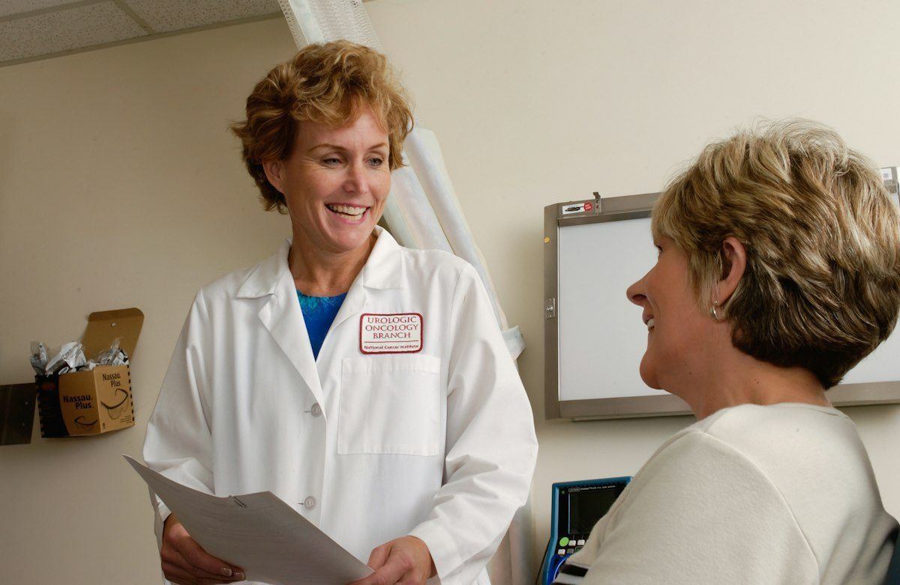
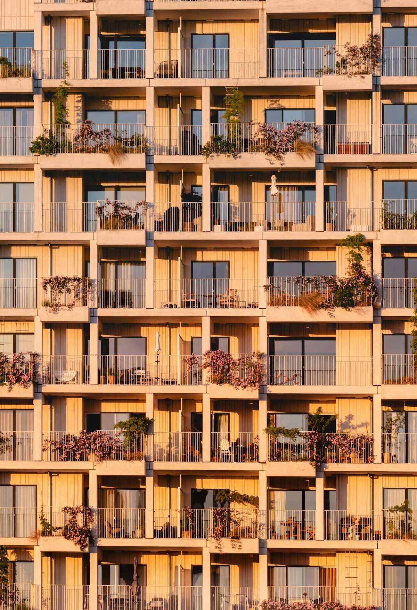
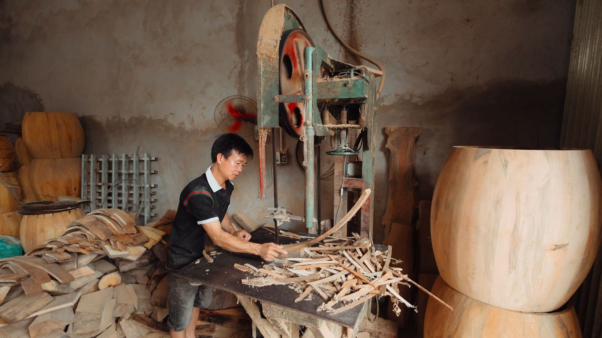
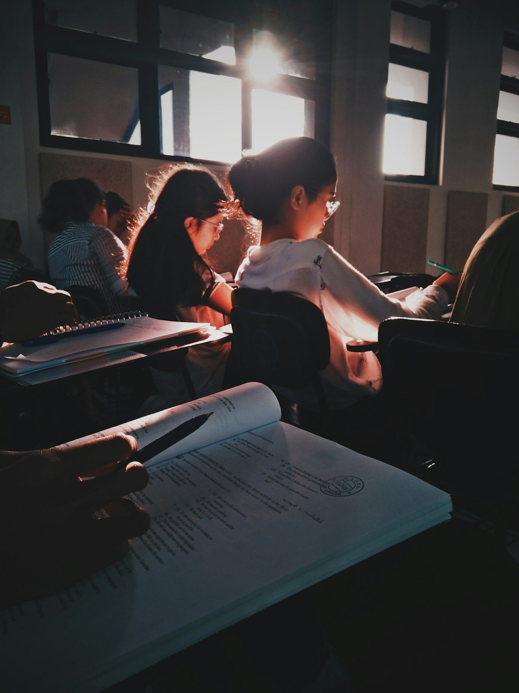
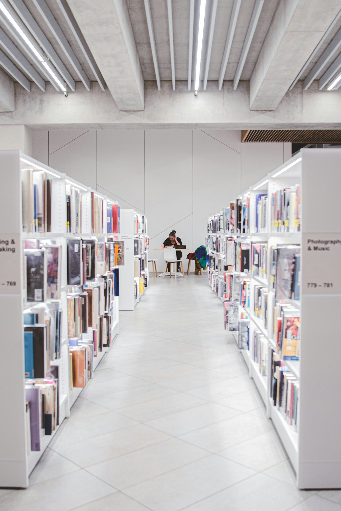
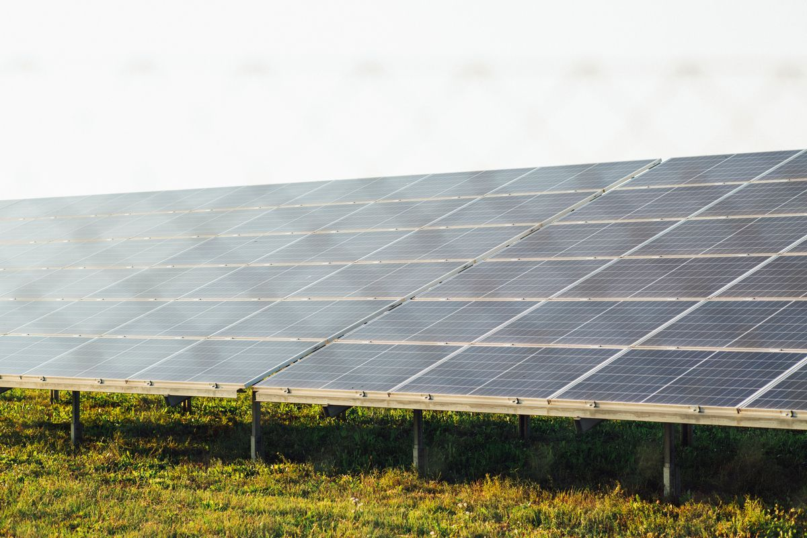
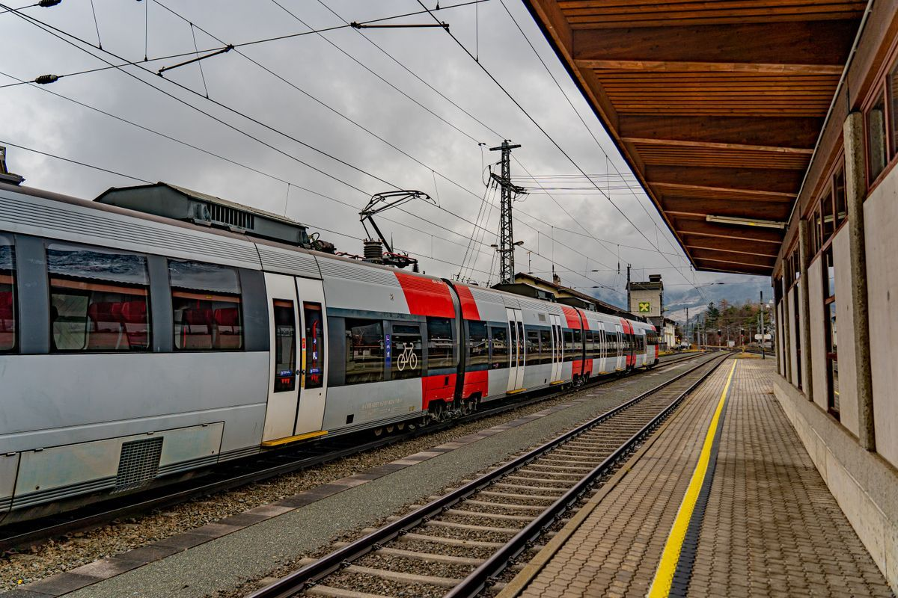
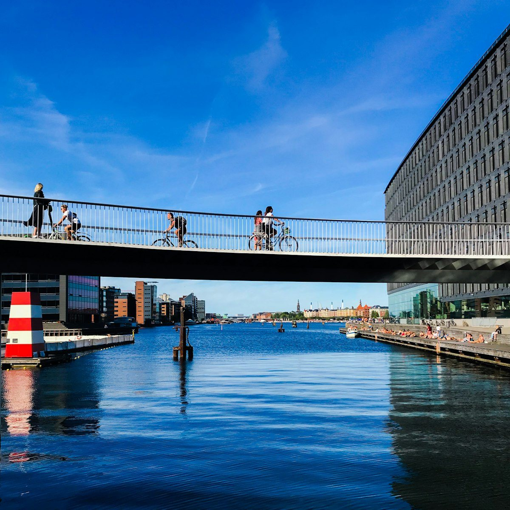

Caprica / 2072
Freedom to be yourself.
A fair chance to thrive.
Four years in opposition. Ready to move Caprica forward.

Public careCare is a right.

Affordable homesA place to call yours.

Fair workA fair share.
A real voice.

Learning & discoveryTalent is everywhere.

An open societyYour life.
Your liberty.

Climate & clean energyA future worth sharing.

Connected communitiesCloser to what matters.

Caprica & the worldStronger, together.
 What we believe
What we believeA country for
all of us.
The next chapter